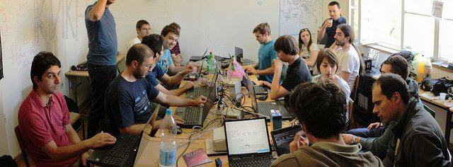

Студентски курс во применети компјутерски науки за дизајн на процесор
Започнете со градење на едноставни логички кола и комбинирајте ги во посложени чипови.
Од 15. октомври 2014 год. до 30. ноември 2014 год. во скопскиот хаклаб КИКА научете да дизајнирате 16-битен процесор — со 32KB RAM и 28 инструкции.
Курсот вклучува ## часа и чини #.### денари.
„Дизајнирање на компјутер, од нула!“ е курс чија цел е студентите да ги запознае со суштината на компјутерските системи: едноставните фундаментални принципи на кои се базираат сите компјутери и начинот на кој човекот успеал да ги примени и апстрахира овие принципи, за на крајот да го добие компјутерот кој го имаме денес.
Во курсот, за основна градбена единка се зема NAND логичката порта и од неа се градат другите логички порти, аритметичко-логичка единица, контролни чипови - за на крајот да се добие функционален процесор, способен да извршува код напишан во assembly. Иако дизајнот на процесорот е поедноставен, концептите на кои се базира се истите на кои се базираат и модерните процесори.
Курсот е базиран на популарниот Nand2Tetris курс и ги опфаќа првите 5, од вкупно 12 глави од книгата. Секоја глава е "self-contained" и содржи вежби кои можат да се изработуваат во изолација. Сепак, бидејќи концептите од секоја глава се темелат на концептите што се учеле во претходните глави, а вежбите користат компоненти кои самите ги имаме изградено, најдобро е книгата да се поминува од почетокот накај крајот, како и што е организиран курсот.
Целна група на овој курс се студенти од техничките факултети, но и средношколци кои имаат намера да продолжуваат во таа насока. Во академски контекст, овој курс го земаат студенти на почетокот и на крајот на студиите. Тие што го земаат на почеток, добиваат слика за материјалот што ги очекува, додека на тие што го земаат на крај им нуди сумирање на сѐ што научиле до тогаш.
во изработка
Андреј е повеќегодишен член на хаклабот КИКА. Професионално работи како фриленс програмер, претежно Node.js и претежно backend. Кога не работи за пари, програмира за душа. Кога сака да научи повеќе за компјутерите, организира курсеви во Хаклаб. Чита и одговара на мејлови: andrejtrajchevski@gmail.com
Гоце е долгогодишен член на заедницата на Слободен Софтвер, дизајнер, како и редовен посетител на КИКА. Откако неговото видео стана дел од секоја vanilla инсталација на Ubuntu, неговиот inbox е преполн со мејлови од типот „како да си го поправам Линуксот“. Работи претежно како веб дизајнер и е одговорен за изгледот на сајтов.
Алекс е човекот кој ја изгради славната LED коцка во Хаклаб. Ентузијаст за електроника и лемење, одговорен е за сѐ што излегло од Хаклаб а не е код, како и за собата преполна со ѓубришта од електроника. Негово дело е и големиот protoboard кој ќе го користиме на курсот за hands-on учење на логички кола.
Fusce a tempor velit. Suspendisse potenti. Etiam ut commodo libero. Ut aliquam enim eu justo finibus, sit amet posuere purus posuere. Nam a tempus metus. Donec sollicitudin iaculis mollis.
| Week | Дата | Опис |
|---|---|---|
| 0 | 14 октомври | интро час, last chance за пријавување и плаќање, на кратко за курсот, tools, hdl |
| 1 | 21 октомври | булова алгебра: составување на елементарни порти од nand, имплементација во хдл |
| 2 | 28 октомври | комбинациона логика: имплементирање на бинарни собирачи од логички порти и, конечно, ALU |
| 3 | 04 ноември | секвенцијална логика: имплементирање на меморија, flip-flops, регистри и РАМ |
| 4 | 11 ноември | запознавање со инструкцискиот код на процесорот, бинарно и во assembly; пишување на low-level програми и симулирање на cpu-то |
| 5 | 18 ноември | интегрирање на чиповите во процесор кој може да го извршува assembly кодот од week 5 |
Хаклабот КИКА е отворен простор (под покрив) каде што се собираат ентузијасти за да пишуваат код, за да лемат или за да дискутираат на разни теми, како слободата на софтверот или таа на медиумите. Хаклабот е дом на програмерите што програмираат и после работа. Хаклабот е местото во кое луѓето претежно имаат Thinkpad со инсталиран Linux.

Официјално, КИКА постои од Октомври, 2011. Од тогаш па до сега, во континуитет, редовно се организираат настани поврзани со Linux и слободен софтвер (GNU/Linux прва помош), програмирање (Програмски јазици) и презентации на општи теми (Сподели знаење). Понекогаш, на проекторот во Хаклаб гледаме филмови, а настанот го нарекуваме „Сподели кино“.
Покрај редовните настани, во Хаклаб се одржуваат и настани како „Gnome Women Outreach“ и „Google Summer of Code“, во кои студенти активно земаат учество и работат на развивање на слободен софтвер. Исто така, пред проекторот често се собираат и членовите на Ruby и Drupal заедниците.
Хаклабот нема спонзор, во живот го одржуваат донациите на неговите членови, кои понекогаш организираат курсеви како овој. Дел од парите ги зема организаторот, а дел одат за КИКА. Додатно, придонесуваат и луѓе кои се заинтересирани просторот да постои, но не се во можност да не посетуваат. Ако си еден од нив, тука има информации како да донираш.
Хаклабот КИКА се наоѓа на ул. „Васил Стефановски“ бр.8/1, во центарот на Скопје близу до поликлиниката Идадија.
во изработка
"Building a computer from scratch" е курс од областа applied computer science во кој студентите работат на дизајнирање на процесор. Пристапот е bottom-up, односно, студентите почнуваат со градење на едноставни логички кола кои во текот на курсот ги комбинираат во покомплицирани чипови. Крајниот продукт е 16-битен процесор кој е поврзан со 32KB RAM меморија и има 28 инструкции.
Секој вторник од 19-21ч.
Хаклаб КИКА
3000 денари (најверојатно)
50% од парите ќе завршат на сметката на КИКА, од која се вадат пари за кирија, сметки и тн. Од остатокот, дел ќе се искористат за трошоци поврзани со курсот, како печатење копии од книгата или купување елементи за протобордот, а другиот дел ќе ги земе предавачот.
Оригиналниот Nand2Tetris курс бара потенцијалните студенти да имаат основно познавање на барем еден програмски јазик, било кој. Предуслов за слушање на "CFS", додатно, е познавање на англиски јазик, заради книгата.
Лаптоп
Да. Во најмала рака, на почетокот на секој час, од студентите ќе се очекува да ја имаат прочитано соодветната глава од книгата. Курсот ги опфаќа првите 5 глави од книгата (секоја седмица по една глава.)
Секој час ќе има две дела: еден пократок и еден подолг. Во пократкиот ќе ja продискутираме теоријата што се обработува во главата од таа недела. Во подолгиот, втор дел, секој студент ќе ги составува чиповите (ќе куца HDL код во симулатор), самостојно или во група.
Не. За жал, процесот на произведување процесори е комплициран и скап.
Да! За инспирација: http://en.wikipedia.org/wiki/Galaksija_(computer)